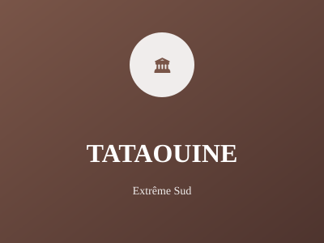

Région désertique et montagneuse

Région désertique et montagneuse du sud-est, Tataouine est célèbre pour son architecture berbère traditionnelle remarquable. La région offre des paysages désertiques spectaculaires et une culture authentique préservée.